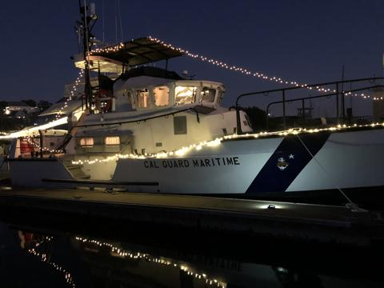

Cal Guard 47 47-ft motor lifeboat · PB470 · ex-SF Marine 1
A former San Francisco Police Department boat, SF Marine 1. The transfer was first proposed in December 2018 and took about 17 months.
- 11 MAR 2019 MG Coggan writes to SFPD requesting SF Marine 1.
- 27 JUN 2019 Hauled out at USCG Sector San Francisco for inspection.
- 15 JUL 2019 SFPD Chief approval. DGS follows on 17 NOV 2019, DOF on 16 APR 2020 and J4 on 23 APR 2020.
- 23 MAY 2020 SFPD hands over the keys. The boat moves from the Port of SF to Angel Island State Park.
- Jul–Aug 2020 MLB Training Mission for California State Parks: 52 of 72 planned sorties.
- 09 AUG 2020 AIS broadcasts the name 'CAL GUARD 1' (SFPD had reprogrammed it).
- 15 AUG 2020 The commanding general's colors fly on PB470 for the first time.
- 17 OCT 2020 Moves from Angel Island to home port, Vallejo Municipal Marina.
- 09–15 NOV 2020 Haul-out and preventive maintenance. This was the last haul-out in the record.
- 2021–2023 Security-zone patrols at SF Fleet Week, AT transits to Monterey and Morro Bay, and a 2022 coolant-pump repair.
- 31 AUG 2023 Haul-out suspended indefinitely (funding). Under-way alerts continue into 2024.